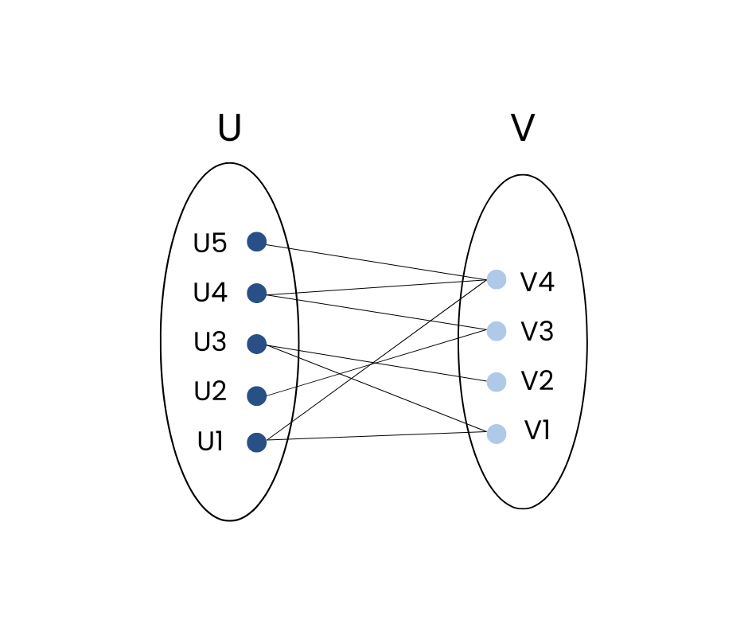

Bipartite Graph
The graph in which vertex can be divided into two sets such that vertex in each set does not contain any edge between them.

Applications
- Recommendation Systems: Matches users with items, where edges signify preferences, such as movies or products.
- Matching Problems: Applied in job assignments or school admissions, connecting applicants to jobs/schools with certain criteria.